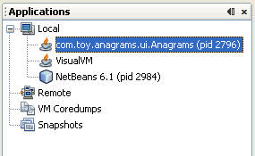

When you click Memory, VisualVM instruments the application and displays the profiling data in the Profiler tab.

VisualVM provides detailed information about Java applications while they are running on the Java Virutal Machine (JVM). VisualVM's graphical user interface enables you to quickly and easily see information about multiple Java applications.
This getting started guide should help you quickly get up and running with the VisualVM. This guide will demonstrate how to install VisualVM and add functionality to the tool by installing a plugin from the VisualVM update center. This guide will show you how to launch VisualVM and view some of the information you can get about an application running on the local JVM and a remote JVM.
The main window of VisualVM opens when you launch the application. By default, the Applications window is displayed in the left pane of the main window. The Applications window enables you to quickly see the Java applications running on the local and remote JVMs.
VisualVM includes a profiler that enables you to profile applications running on your local JVM.
You access the profiling controls in the Profiler tab of the application.
The profiler enables you to analyze memory usage and CPU performance of local applications.
Note. To profile an application running on JDK 6, you need to turn off class sharing for the application otherwise the application may crash.
To turn off class sharing, start the application with -Xshare:off argument.
When you click Memory, VisualVM instruments the application and displays the profiling data in the Profiler tab.
VisualVM enables you to easily take and save a snapshots of the heap to capture data about local applications. You can use the VisualVM heap browser to view and explore the heap snapshot. You can also load and browsed saved heap dumps.
When you click Heap Dump, VisualVM opens the heap dump in a new tab. VisualVM also adds a node for the heap dump below the application's node in the Applications window.
You can add functionality to VisualVM by installing plugins available from the VisualVM update center. For example, installing the VisualVM-MBeans plugin adds an MBeans tab to the application tab that enables you to monitor and manage MBeans from within VisualVM.
To install a VisualVM plugin:

Screenshot of Plugin manager with the VisualVM-MBeans plugin selected.
VisualVM enables you to easily monitor applications running on remote hosts and view general data about the remote system. You cannot profile applications running on a remote host.
You can also add remote hosts to view details about applications running on remote JVMs. Remote applications are listed below the Remote node in the Applications window.To retrieve data from a remote application, the jstatd utility needs to be running on the remote JVM. For more information on how to start jstatd, see jstatd - Virtual Machine jstat Daemon
When you click OK, a node for the remote host appears under the Remote node. Expand the remote host node to see the Java applications that are running on the remote host.
You can double-click on the name of the remote applications to open the application tab in VisualVM.